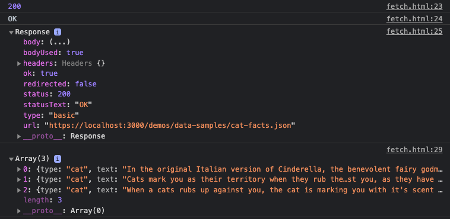

← Learn Javascript
"Above all else, show the data."– Edward R. Tufte
In addition to primitive data types like boolean, number, and string, Javascript has types classified as data collections, which can include arrays, objects, as well as more complex entities, hierarchical collections, and lists.
A Javascript array
let primaries = ["red", "green", "blue"];
A Javascript object. Note, Arrays and objects can be used together, such as here where multiple similar objects ("albums") are collected together.
var singer = {
"name": "Bruce Springsteen",
"albums": [
{
"name": "Born to Run",
"year": 1975
}, {
"name": "Born in the U.S.A.",
"year": 1984
}, {
"name": "The Ghost of Tom Joad",
"year": 1995
}
]
};
See these lessons for more on arrays, objects, and other collections.
Data collections can be stored inside code files, or more often, imported from external files, databases, or API servers. Data exchange formats help to standardize how data is stored and transmitted when you import external data and generally fall into one of the below categories:
CSV, TSV)"make", "model", "year"
"Pontiac", "Vibe", 2009
"Honda", "Fit", 2007
"Chevrolet", "Blazer", 2000
"Toyota", "RAV4", 1999
JSON or XML).{
"cars": [{
"make": "Pontiac",
"model": "Vibe",
"year": 2009
}, {
"make": "Honda",
"model": "Fit",
"year": 2007
}, {
"make": "Chevrolet",
"model": "Blazer",
"year": 2000
}, {
"make": "Toyota",
"model": "RAV4",
"year": 1999
}]
}
See this lesson for more on data exchange formats
There are two important concepts to know about when importing external data into your program:
json file is plain text, and so it must be deserialized and stored in computer memory to use it.Cross-Origin Resource Sharing (a.k.a. CORS policies) control how Javascript in the browser can access external resources. Unless explicitly enabled by the host defaults are:
https://foo.com can access a file at https://foo.com/data.json because they have the same origin.https://foo.com cannot access a resource at a different origin https://bar.com/data.jsonfile:///Users/username/coolwebsite/index.html cannot fetch() file:///Users/username/coolwebsite/data.json because 'URL schemes must be "http" or "https" for CORS request'Just imagine if any website you visited could access this location! file:///Users/username/allYourPersonalData
If you see the following error it likely means you are trying to access an API on a server that hasn't enabled CORS.
Access to fetch at '<remote-url>' from origin '<your-website-url>' has been blocked by CORS policy
No 'Access-Control-Allow-Origin' header is present on the requested resource.
To get around this while you are developing locally, you can do one of the following:
Data imported from an external source is technically a string when Javascript loads it. Data that is in text form, or serialized into a data exchange format, can be stored or sent across a network as a single entity.
For example, data returned from this random cat facts API (docs) is just one large string:
const str = '[{"type":"cat","text":"In the original Italian version of Cinderella, the benevolent fairy godmother figure was a cat."},{"type":"cat","text":"Cats mark you as their territory when they rub their faces and bodies against you, as they have scent glands in those areas."},{"type":"cat","text":"When a cats rubs up against you, the cat is marking you with it's scent claiming ownership."}]';
Before you can use external data in your code, you must conversely deserialize the string into a data structure that Javascript can read and use.
For example, JSON.parse() can be used to convert a string of serialized JSON data into a Javascript Object.
let obj = JSON.parse(str);
console.log(obj[2].text);
// -> "When a cats rubs up against you, the cat is marking you with it's scent claiming ownership."
After the above, the JSON string has now been deserialized, and is an object that Javascript can use.
[{
"type": "cat",
"text": "In the original Italian version of Cinderella, the benevolent fairy godmother figure was a cat."
}, {
"type": "cat",
"text": "Cats mark you as their territory when they rub their faces and bodies against you, as they have scent glands in those areas."
}, {
"type": "cat",
"text": "When a cats rubs up against you, the cat is marking you with it's scent claiming ownership."
}]
You can also convert a Javascript Object back to a string with JSON.stringify().
console.log(JSON.stringify(str)); // -> "[{"type":"cat","text":"In the original Italian version ... ]"
Fetch() is the most common method to load (or send) external data in Javascript. You start with an HTTP request, passing in the URI for your resource. Fetch is asynchronous, and will first return a Promise object, which will then be resolved upon the eventual completion (or failure) of the asynchronous operation.
fetch('https://cat-fact.herokuapp.com/facts/random').then(response => console.log(response));
// -> Promise {<pending>}
// -> Response {type: "cors", url: "https://cat-fact.herokuapp.com/facts/random", redirected: false, status: 200, ok: true, ...}
In order to use the data that fetch returns we must deserialize the response.body with response.json()
fetch('https://cat-fact.herokuapp.com/facts/random') // request external resource
.then(response => {
console.log(response); // the response object
console.log(response.status, response.statusText); // -> 200, "OK"
return response.json(); // parse response.body (convert to JSON), pass to next .then()
})
.then(data => { // data = the deserialized data of the external file
console.log(data); // log the object
});

D3's d3-fetch module provides several methods to load and deserialize external data via HTTP request. For more information see the documentation or this Data Loading in D3 tutorial.
Install D3 in your HTML
<script src="https://d3js.org/d3-dsv.v2.min.js"></script>
<script src="https://d3js.org/d3-fetch.v2.min.js"></script>
d3.json() return a Javascript object from JSON
// as of v5 D3 uses a promise-based syntax
d3.csv("/path/to/file.csv").then(function(data) {
console.log(data); // use data here
});
d3.csv() return a Javascript object from CSV
d3.csv("/path/to/file.csv").then(function(data) {
console.log(data); // use data here
});
Several other CSV parsers exist, including:
I cover this in a video How to export JSON data from google sheets (34:00)
While the easiest to start, it will quickly become tedious if you plan to update your spreadsheet often.
Fairly simple to implement, this method allows you to reimport your data instantly with a single command line script. See sample-node-tools/node-projects/export-google-sheets for a working example.
This is the most involved method. See their tutorial and documentation.
credentials.json to your working directory.quickstart.jsSee https://omundy.github.io/learn-computing/slides/data-apis.html
When you use remote data it adds additional latency and points where problems can occur:
async/await, promises, etc.)Start with a tool that makes it easy to see what is returned:
When you use data in a project you should address which of the following applies to your application:
Some example situations:
static not cleandynamic, I need to insert, update, and querydynamic accessed via a requestquery.insert, update, and query your data.https://flaviocopes.com/mysql-how-to-install/
See https://omundy.github.io/learn-computing/slides/data-cleaning.html
writeFileFor example, to convert this file ../datasets/temps.csv
C, F, description
-273.15, -459.67, absolute zero temperature
0, 32.0, freezing/melting point of water
21, 69.8, room temperature
37, 98.6, average body temperature
100, 212, boiling point of water
to deserialized Javascript code, two-dimensional array would be the closest equivalent data structure in Javascript for tabular data.
const tempsArr = [
['C', 'F', 'description']
['-273.15', '-459.67', 'absolute zero temperature'],
['0', '32.0', 'freezing/melting point of water'],
['21', '69.8', 'room temperature'],
...
];
Depending on your application you may want to convert your data to a Javascript object to make it easier to use. Below, each row has been converted so that the column values can be referenced by their keys, and those which are numbers have been retyped from a string to number type.
const tempsObjectsArr = [
{
C: -273.15,
F: -459.67,
description: 'absolute zero temperature'
},{
C: 0,
F: 32.0,
description: 'freezing/melting point of water'
},{
C: 21,
F: 69.8,
description: 'room temperature'
}
...
];
console.log(`${tempsObjectsArr[2].description} is about ${tempsObjectsArr[2].F} F`);
// -> 'room temperature is about 69.8 F'